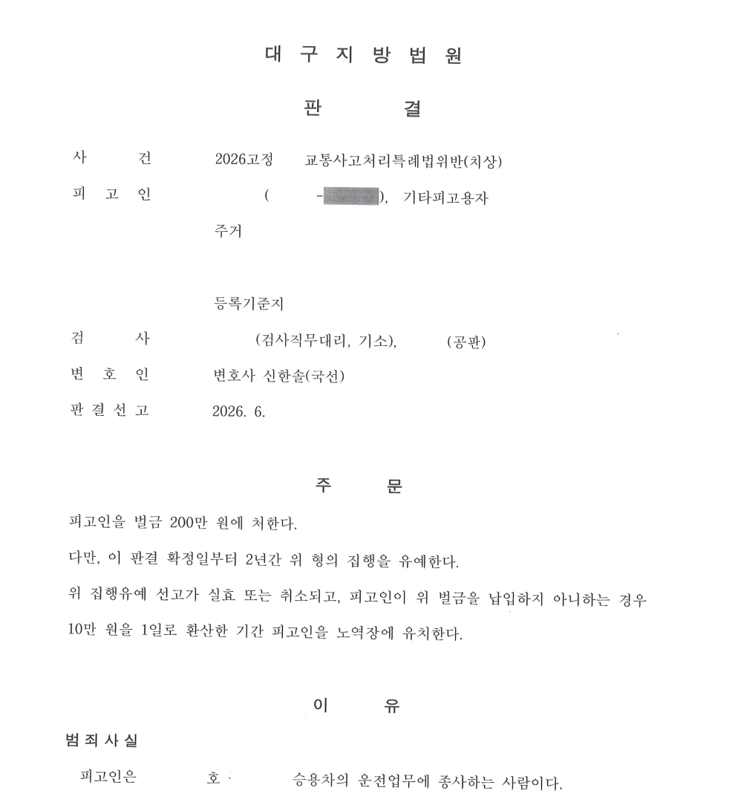

피고인은 대구 동구의 주유소에서 일하던 70대 근로자였습니다. 손님이 두고 간 신용카드를 돌려주고 돌아오던 중 주유소 앞 보도로 진입했고, 보행자를 충격하여 4주 진단의 상해를 입혔습니다.
자동차종합보험 처리는 되었지만 피해자와의 형사합의는 이루어지지 않았습니다. 검사는 벌금 200만 원으로 약식기소했고, 법원도 같은 금액의 약식명령을 발령했습니다.
약식명령을 받은 피고인들은 흔히 “법정에서 형편을 말하면 벌금이 깎이지 않을까”라고 생각합니다. 그러나 정식재판청구 사건에서는 벌금형을 징역형으로 바꿀 수 없을 뿐, 벌금액 자체는 더 올라갈 수 있습니다.
특히 공소사실을 인정해야 하는 사건에서 피고인이 법정에서 피해자를 탓하거나, 합의가 되지 않은 이유를 감정적으로 설명하면 재판부는 이를 반성 없는 태도로 볼 수 있습니다. 이 사건에서도 피고인이 혼자 법정에 섰다면 “피해자가 과하다”, “나는 돈이 없다”는 말이 그대로 나올 위험이 있었습니다.
피고인은 사고 경위와 피해자의 치료 기간, 합의금 요구에 대해 억울함을 가지고 있었습니다. 그러나 그 표현을 그대로 법정에서 말하면 피해자 비난으로 들릴 수 있었습니다.
신한솔 변호사는 피고인에게 피해자를 비난하는 표현을 하지 않도록 명확히 주의시키고, 피고인의 이야기를 법원이 받아들일 수 있는 양형자료로 바꾸어 정리했습니다.
손님의 분실물을 돌려주려다 발생한 사고라는 점, 저속으로 이동하던 중 발생한 사고라는 점, 사고 직후 구호조치를 했다는 점, 종합보험 처리가 이루어졌다는 점, 피고인이 고령이고 월수입이 매우 적어 형사합의를 하지 못한 점을 양형 구조 안에 넣었습니다.
이 사건에서 벌금 200만 원 자체를 정면으로 낮추는 것은 쉽지 않았습니다. 합의가 이루어지지 않았고, 보도 침범이라는 12대 중과실 요소가 있었기 때문입니다.
따라서 신한솔 변호사는 벌금 감액을 구하면서도, 재판부가 벌금 200만 원이라는 양정을 유지할 경우를 대비해 벌금형의 집행유예를 함께 구했습니다.
대구지방법원은 피고인에게 벌금 200만 원을 선고하되, 그 집행을 2년간 유예했습니다. 벌금액이 줄어든 것은 아니지만, 벌금을 낼 돈이 없어 노역장 유치까지 걱정해야 했던 피고인에게는 실질적으로 가장 필요한 결과였습니다.
형사사건에서는 합의가 가장 중요합니다. 그러나 현실적으로 합의할 자력이 없는 피고인도 있습니다. 이때 필요한 것은 법정에서 억울함을 그대로 쏟아내는 것이 아니라, 불리한 사정을 인정한 상태에서 법원이 받아들일 수 있는 참작 사유를 정확히 구성하는 일입니다.
개인정보와 사건번호 일부를 비식별 처리한 사건 결과 문서 일부입니다. 본 사례는 의뢰인 보호를 위해 필요한 범위에서만 내용을 공개합니다.

12대 중과실 교통사고·정식재판청구·벌금형 집행유예 문제로 고민하고 계십니까.
신한솔 변호사가 직접 기록과 양형 구조를 검토합니다.
변호사 논평
정식재판청구는 단순한 읍소의 장이 아닙니다. 공소사실을 인정해야 하는 사건일수록 피고인의 말은 더 정제되어야 합니다. 이 사건은 피고인의 날것의 억울함을 줄이고, 재판부가 받아들일 수 있는 양형 구조로 다시 구성하여 벌금형 집행유예라는 실질적 결과를 만든 사례입니다.